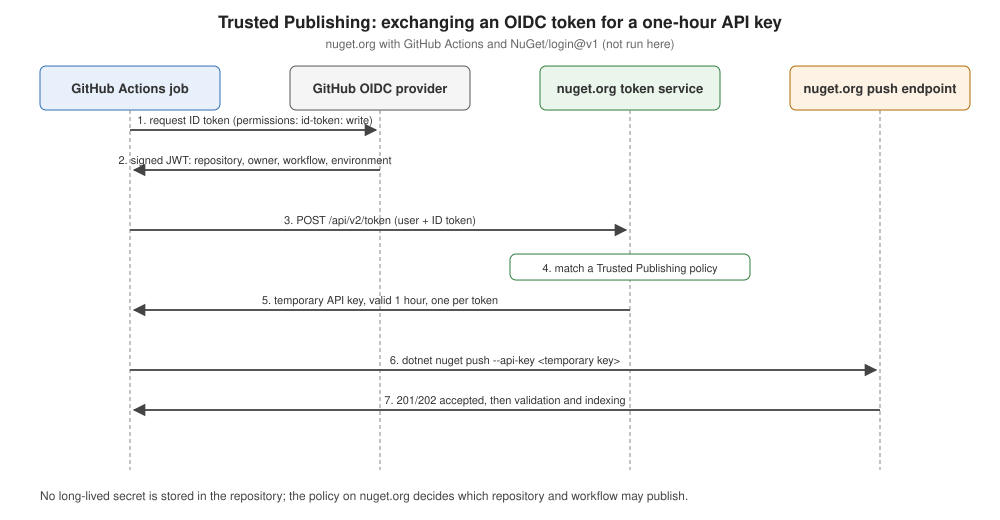

Trusted Publishing
|
This content was generated with the assistance of AI and should be verified against the official documentation before being relied on in production. |
Trusted Publishing (announced on 2025-09-22) replaces the long-lived nuget.org API key in CI with a key that is
created for one workflow run and expires within an hour. Nothing secret is stored in the repository or its settings:
nuget.org trusts a specific repository and workflow, proven by a token that the CI system signs. Since nuget.org
limited stored API keys to 30 days in August 2026
(Key lifetimes since 2026),
it is the recommended way to publish. Nothing on this page was run: it needs a public GitHub repository and a nuget.org
account, and Ledgerline is never published. Everything is checked against the nuget.org documentation and the
NuGet/login action’s action.yml and README (v1.2.0).
How it works

-
The package owner registers a Trusted Publishing policy on nuget.org: repository owner, repository, workflow file and, optionally, a GitHub environment.
-
The workflow job, with
permissions: id-token: write, asks GitHub’s OIDC provider for a signed JSON Web Token describing the run (repository, owner, workflow, environment, with the audiencehttps://www.nuget.org). -
The
NuGet/loginaction sends the token and the nuget.org user name tohttps://www.nuget.org/api/v2/token. -
nuget.org validates the token and matches it against the policies; if one matches, it returns a temporary API key valid for one hour. One token buys one key.
-
dotnet nuget pushuses that key like any other.
Request the key just before the push; a key fetched at the start of a long job can expire before it is used.
Setting it up for GitHub Actions
On nuget.org: your user name > Trusted Publishing > add a policy. For a repository github.com/ledgerline/ledgerline
with .github/workflows/release.yml:
| Field | Value |
|---|---|
Repository Owner |
|
Repository |
|
Workflow File |
|
Environment (optional) |
|
Values are case-insensitive. In the workflow, the job that pushes needs id-token: write, and NuGet/login@v1 needs
user: — the nuget.org profile name, not an e-mail address (the docs suggest a secret such as
${{ secrets.NUGET_USER }}). Its output NUGET_API_KEY is the temporary key:
- name: NuGet login (OIDC to temporary API key)
uses: NuGet/login@v1
id: login
with:
user: ${{ secrets.NUGET_USER }}
- name: Push
run: dotnet nuget push "artifacts/*.nupkg" --api-key "${{ steps.login.outputs.NUGET_API_KEY }}" --source https://api.nuget.org/v3/index.json --skip-duplicateThe action’s other inputs, token-service-url (default https://www.nuget.org/api/v2/token) and audience (default
https://www.nuget.org), point it at another NuGet server that implements the same exchange. Version tags: v1
(moving), v1.1.0 and v1.2.0; v1.2.0 runs on Node 24.
GitLab
GitLab CI/CD is supported too. The job requests an ID token with the nuget.org audience, exchanges it with curl, and
pushes:
publish_nuget:
stage: publish
image: mcr.microsoft.com/dotnet/sdk:10.0
id_tokens:
NUGET_ID_TOKEN:
aud: "https://www.nuget.org"
script:
- |
API_KEY=$(curl -s -X POST "https://www.nuget.org/api/v2/token" \
-H "Content-Type: application/json" \
-H "Authorization: Bearer $NUGET_ID_TOKEN" \
-d "{\"username\": \"$NUGET_USERNAME\", \"tokenType\": \"ApiKey\"}" | jq -r '.apiKey')
- dotnet nuget push ./artifacts/*.nupkg -s https://www.nuget.org/api/v2/package -k "$API_KEY"(adapted from the documentation, which uses the sdk:8.0 image and also prints the HTTP status). The policy matches the
token’s namespace_path and project_path claims (required), and environment and ref when set in the policy — ref
must be a branch, so tag pipelines cannot match a ref policy.
Scopes, ownership and activation
-
Scopes — like API keys, a policy can be limited to publishing new packages or new versions of existing ones, with a glob pattern of package IDs.
-
Ownership — a policy belongs to a user or an organization and covers all packages of that owner. An organization policy becomes inactive if its creator leaves the organization (and active again when re-added), or if the organization is locked or deleted; the UI shows a warning.
-
Pending activation — a new policy, typically for a private GitHub repository, can start "temporarily active" for 7 days: nuget.org needs the repository and owner IDs from a first real token to lock the policy against a deleted-and-recreated repository with the same name. If nothing is published in 7 days it becomes inactive; the window can be restarted.
The complete Ledgerline release workflow (not run here)
Build and push are separate jobs, so only the short push job can mint an OIDC token (CI Release Workflows):
name: release
on:
push:
tags: [ 'v*' ]
permissions:
contents: read
jobs:
build:
runs-on: ubuntu-latest
steps:
- uses: actions/checkout@v7
with:
fetch-depth: 0
- uses: actions/setup-dotnet@v6
with:
global-json-file: global.json
- run: dotnet restore --locked-mode
- run: dotnet test --no-restore
- run: dotnet pack --no-restore -o artifacts -p:ContinuousIntegrationBuild=true -p:Version=${GITHUB_REF_NAME#v}
- uses: actions/upload-artifact@v7
with:
name: packages
path: artifacts/*
publish:
needs: build
runs-on: ubuntu-latest
environment: nuget
permissions:
id-token: write
steps:
- uses: actions/download-artifact@v8
with:
name: packages
path: artifacts
- uses: NuGet/login@v1
id: login
with:
user: ${{ secrets.NUGET_USER }}
- run: dotnet nuget push "artifacts/*.nupkg" --api-key "${{ steps.login.outputs.NUGET_API_KEY }}" --source https://api.nuget.org/v3/index.json --skip-duplicateThe matching policy: owner and repository of the project, workflow file release.yml, environment nuget. The
.snupkg files beside the .nupkg files are pushed by the same command.
Common failures
-
Missing
id-token: write— the job can’t request a token; set it on the push job (top-levelpermissionsset to read-only does not grant it). -
An e-mail address in
user:— it must be the profile name. -
The path in "Workflow File" — enter
release.yml, not.github/workflows/release.yml. -
An environment in the policy but not in the job (or the reverse) — the claims don’t match.
-
The key requested too early — it lasts one hour.
-
A renamed workflow file — the policy names the file; renaming it breaks publishing until the policy is updated.
Documentation gaps
-
The Trusted Publishing page appears in neither the NuGet table of contents nor the nuget.org section’s; only the nuget.org overview links it.
-
It names the nuget.org UI differently in its two sections: Trusted Publishing under the user name for GitHub, Account > Federated credentials for GitLab.
-
Azure Pipelines is not documented as an identity provider; pipelines there still need an API key.
-
GitLab support has no announcement date that could be verified.